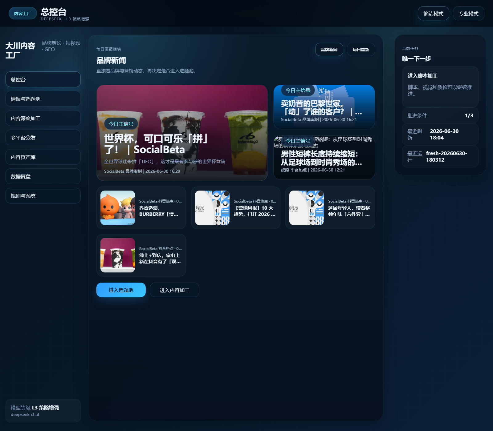
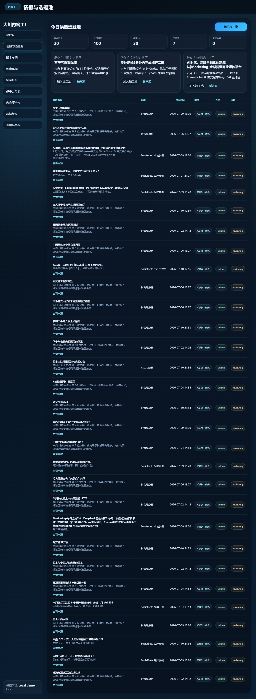

01
OPEN SOURCE / AI / CONTENT OS
JENSENBOX
A local-first operating layer for turning signals into content, and content into reusable assets.
Open GitHub ↗Signal→Insight→Assets
PUBLIC ENTRY / PERSONAL SYSTEMS
FROM SIGNALS TO SYSTEMS.
Brand growth operator, AI builder and content systems designer. I turn ideas, experience and tools into work that can be used again.
My work sits between brand, business and technology: understand the real problem, build a workable path, then turn the experience into something repeatable.
The figures below come from my real project records. They describe work I led, supported or contributed to with teams and partners; they are not presented as personal income.
VERIFIED PROJECT RECORDSI started from the front line of marketing and operations, where every idea has to face users, channels, teams and sales. That experience still shapes how I use AI today.
OPEN SOURCE / AI / CONTENT OS
A local-first operating layer for turning signals into content, and content into reusable assets.
Open GitHub ↗CONTENT SYSTEM / OPERATIONS
An operating loop for intelligence, ideas, scripts, visual production, distribution and learning.
View the system ↗AI BUILDING / AGENTS / CODEX
Practical experiments in agents, knowledge workflows and human-in-the-loop product building.
Follow the work ↗A public window into the work: intelligence, production and visual output in one operating loop.


Positioning, launches, channels, private-domain growth and the operating discipline behind commercial outcomes.
Signals, editorial judgment, scripts, visual production, distribution and assets that compound.
Product definition, workflow design and directing AI tools toward real-world use instead of demos.
Campaigns, users, stores, channels and the details that make a plan survive contact with the world.
Brand work, user growth, private-domain operations, channels and project coordination.
Connect intelligence, ideas, scripts, visual production, distribution and review into one loop.
Use AI, Codex and agents to make practical workflows visible, testable and easier to improve.
Jensenbox.cn becomes a public doorway into the work, the systems and the next chapter.
OPERATING PRINCIPLE
Bring possibility, feasibility and potential into reality. Turn them into clear goals. Work from first principles.
OPEN CHANNEL
For projects, product conversations, open-source collaboration and meaningful exchanges.